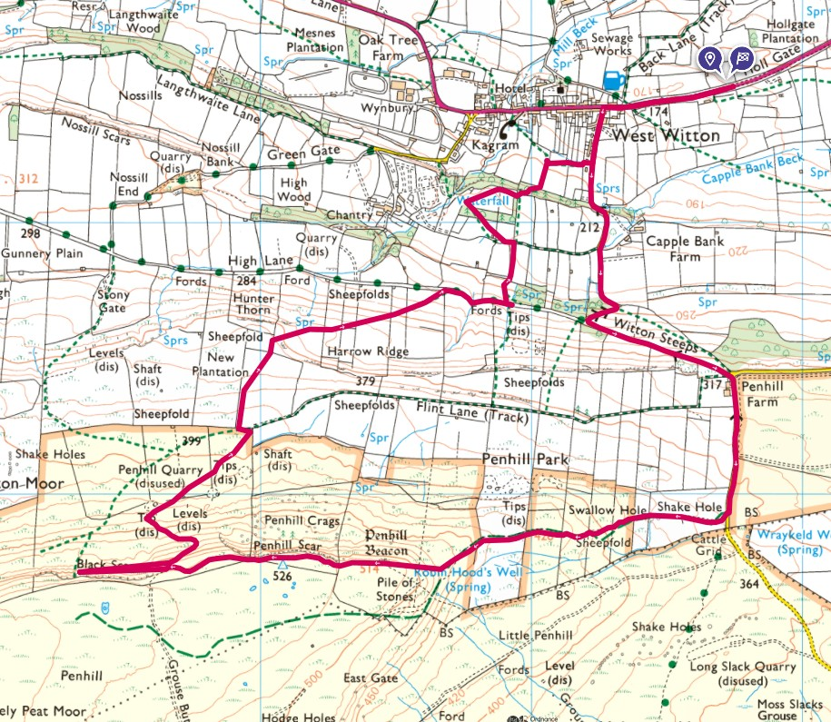
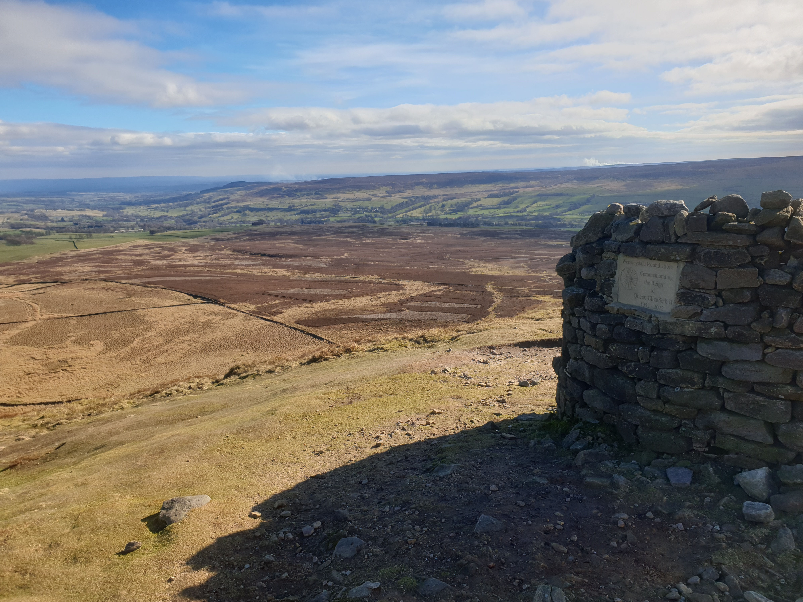
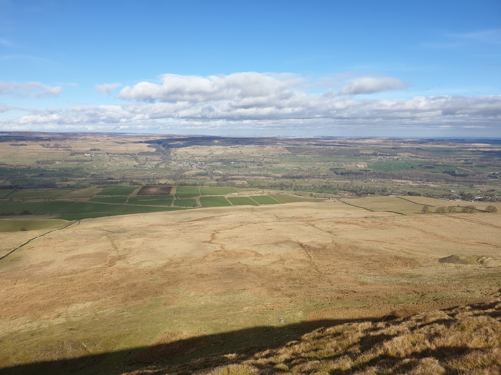
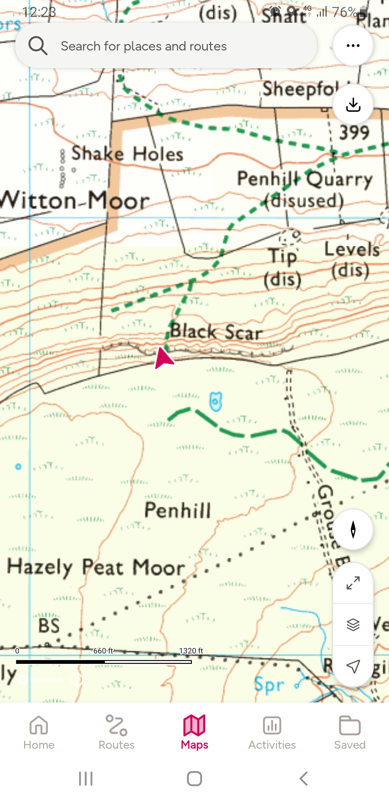
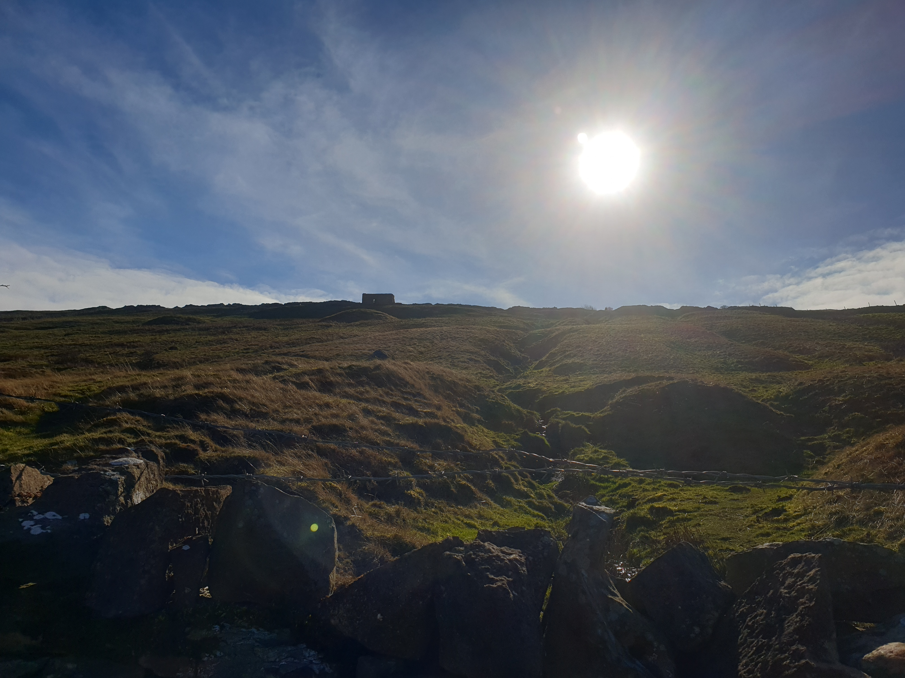

For many years the backdrop to our stays at Dorlands Farm, Penhill was always over the other side of the valley so I thought it was time for a visit.
Here's Tiggy parked outside Dorlands Farm with Penhill in the background.

Parking by the side of the road here just before you get to West Witton I completed the following loop. Starting with a fairly steep uphill for some time until you get to the top of the hill.

Here is a view of Penhill form near the parking spot. Quite a climb!

There was a lot of flooding on the paths so I chose to follow the roads as you can see on the map at the top of the page. In the past I've just gone straight up the hill following a steep path up the fields. The roads I followed this time were Grassgill Lane and the well named Witton Steeps


I kept following the road winding uphill until I got to the racehorse training ground.

From the racecourse its a right turn along a footpath with a great view of another climb! Even from here the stone cairn at the top is visible.

Away from the road a very steep cross country climb (with a few stops) and I got to the top. The stone cairn had a memorial plaque commemerating the Reign of Queen Elizabeth II.

Following the nothern edge of Penhill there are a few paths that aren't on the map, I just followed the top of the hills cliff edge. With some great views across the dale, this pic covers Bolton castle on the left and Prestin-under-scar with Dorlands farm on the right.

Originally I intended to follow the path down from Black Scar seen here on the map.

But it was a lot steeper than it looked.

So I aborted that plan and followed a much easier path down just a little east of the black scar path.

The route down was a lot less steep than the way up. Following paths through fields until you get back to West Witton.

A nice picture I took on an earlier visit when I used the fields to get to the top rather than the roads.

The stone building just above also appears in this photo I took on the way down.
